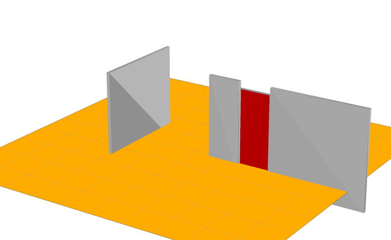
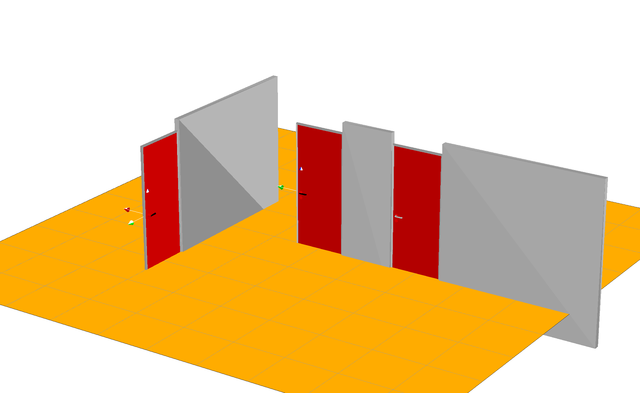
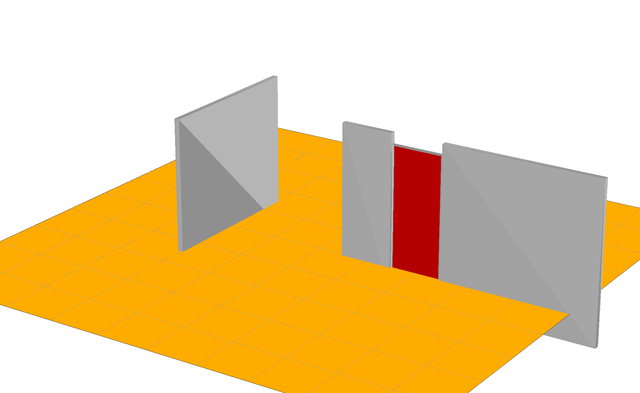
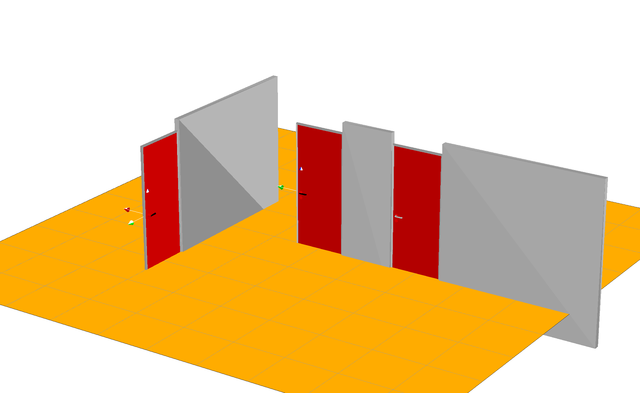

The Curious Robot
The Curious Robot (TCR) is about the challenge of gaining controllability over external DoFs in complex environments, i.e., exploring and learning the environment and building a model of the world with the affordances of the objects in the world.


The Method
We approximate the belief with a physics simulation and focus on learning the geometry and kinematic structure of the environment, i.e., we learn the object type (static, free, articulated) and its properties (joint type, pose, limits, etc.). Probability distributions are used for the types and properties of the objects. The exploration is guided by active learning and maximazing the information gain.
Modes and strategies of exploration
The robot must learn how to find DoFs (exploration for discovering DoFs) and how to manipulate them (exploration for modeling DoFs). The strategies can be different depending on the object type.
The exploration is guided by active learning and maximizing the information gain.
Setup & Experiments
TCR is done in simulation and in the real world with our PR2 BigBird (work in progress). In the simulation the robot, a flying ball/just an end-effector, explores the world which consists of a room (walls, doors, handles, etc.). In the real world scenario, our PR2 BigBird explores a living room (doors, drawers, handles, toys, blocks, (light) switches, pens, etc.).
Example: Belief Update
Here, you can see how the belief of the robot is iteratively updated.
 




Poster
For more information download the Poster of TCR which was presented at the Machine Learning Summer School 2013 (MLSS 2013) in Tübingen, Germany.